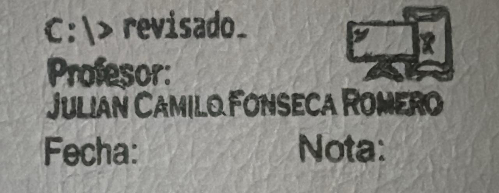
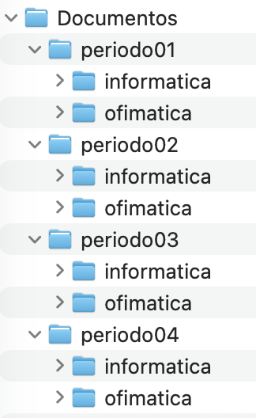

Información¶
La siguiente información es útil para el estudiante.
Útiles escolares¶
Cuaderno cocido (100 hojas y cuadriculado).
Lapiz, Borrador, Tajalapiz.
Esferos azul, negro.
Corrector.
Porcentaje de notas %¶
50% + 40% + 10% = 100%
50% COGNITIVA: Guías didácticas.
40% PROCEDIMENTAL: Resultado general prueba INSTRUIMOS.
10% ACTITUDINAL = 5% PERFIL Kennediano + 5% Trabajo en equipo.
Equivalencia calificación INSTRUIMOS¶
La siguiente tabla muestra el equivalente del puntaje de nota Instruimos (1-100) respecto al valor de la nota en la Institución Educativa (1-5).
Puntaje INSTRUIMOS |
Nota IE |
|---|---|
10-15 |
10 |
16-25 |
15 |
26-35 |
20 |
36-40 |
25 |
41-45 |
29 |
46-55 |
30 |
56-65 |
35 |
66-75 |
40 |
76-85 |
45 |
86-95 |
48 |
96-100 |
50 |
Sello docente¶
Estudiante coloca la fecha.
La nota puede ser cualitativa o cuantitativa.
Por lo general, cada sello se marca después de terminar una guía.
 Sello docente¶ |
{kind=link}
Acceso dentro y fuera del aula¶
Los estudiantes pueden acceder al libro digital desde cualquier lugar con acceso a INTERNET. También pueden acceder por medio de la INTRANET si estan conectados a la red del aula.
Si los estudiantes no tienen acceso a INTERNET, pueden descargar el libro digital previamente en sus equipos o smartphones.
INTRANET: http://192.168.115.100
INTERNET: https://aula115.readthedocs.io
Modelo de almacenamiento Google WorkSpace®¶
La siguiente tabla presenta la capacidad máxima de almacenamiento disponible para cada miembro de la comunidad educativa, de acuerdo con su rol dentro de la Institución Educativa John F. Kennedy.
rol |
ACTIVO |
EGRESADO |
RETIRADO |
PENSIONADO |
|---|---|---|---|---|
ADMINISTRATIVO |
1TB |
N/A |
16GB |
16GB |
DOCENTE |
256GB |
N/A |
16GB |
16GB |
ESTUDIANTE |
16GB |
16GB |
X |
N/A |
X = Suspensión de la cuenta
Acceso al aula 115 en contrajornada¶
Para asegurar y mantener la correcta funcionalidad de los equipos, se debe tener un control y seguimiento en el aula. Es por eso que los estudiantes que deseen hacer uso del aula de informática 115 en contra-jornada, deben solicitar el acceso enviando un correo a:
- Cuenta:
camilo.fonseca@jfkennedy.edu.co
- Asunto:
Autorización acceso aula 115 en contra-jornada
Los horarios en contrajornada son:
Mañana: 10AM-12PM
Tarde: 01PM-03PM
Acceso de estudiantes al PC¶
1cursoActual = input("CURSO: ")
2
3if (cursoActual == "8A" or cursoActual == "8B"):
4 usuarioEstudiante = "usuario"
5
6elif (cursoActual == "10A"):
7 usuarioEstudiante = "10A"
8 print("dar contraseña de acceso a 10A")
9
10elif (cursoActual == "10B"):
11 usuarioEstudiante = "10B"
12 print("dar contraseña de acceso a 10B")
13
14elif (cursoActual == "11A"):
15 usuarioEstudiante = "11A"
16 print("dar contraseña de acceso a 11A")
17
18elif (cursoActual == "11B"):
19 usuarioEstudiante = "11B"
20 print("dar contraseña de acceso a 11B")
21
22else:
23 usuarioEstudiante = "NO INFO"
|
Estructura carpeta de evidencias¶
Los estudiantes tienen la siguiente estructura de carpeta de evidencias:
 Carpeta de evidencias¶ |
{kind=link}
Los archivos que se trabajen en clase, deben ser clasificados en las carpetas según el periodo y la asignatura.
Actividades inicio de año escolar¶
ASIGNAR equipos de pareja (hombre y mujer).
DAR hoja para que anoten sus nombres, correo institucional y equipo asignado por pareja.
PRESENTACIÓN del docente.
Explicación útiles escolares.
Explicación de porcentaje de notas %.
Explicación equivalencia de notas INSTRUIMOS.
Explicación sello docente.
Explicación acceso dentro y fuera del aula.
Explicación modelo de almacenamiento.
Explicación acceso al aula 115 en contrajornada.
Reglas del aula (cada estudiante lee una regla y escriben las reglas en su cuaderno).
FIRMA DE COMPROMISOS en el cuaderno (Desbloqueo de equipo).
Acceso de estudiantes al PC.
Estructura carpeta de evidencias.